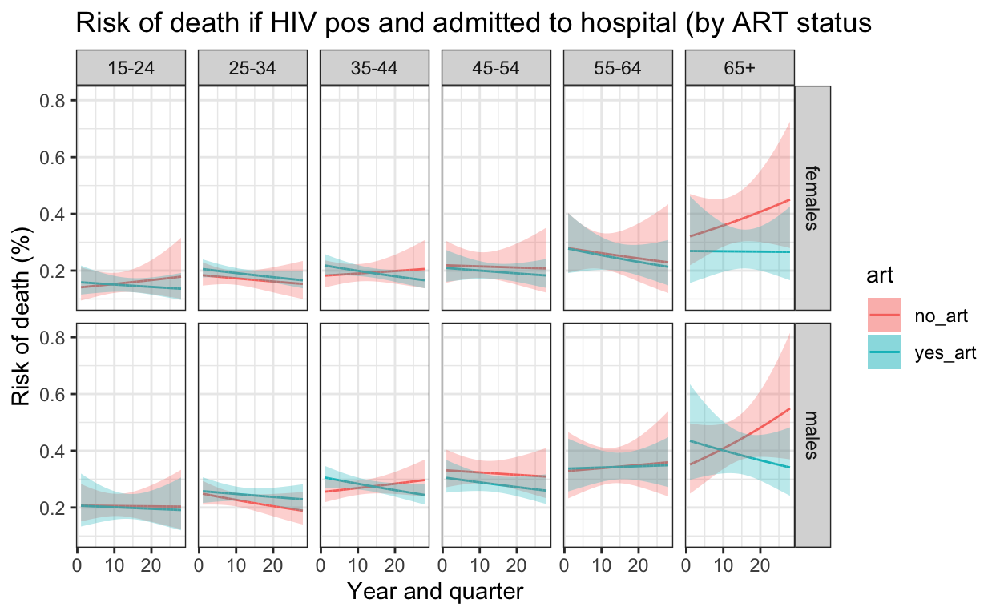

RMD document for analysis for spine paper
0. Setup
Load the required libraries and data
## NB. one of these has "MASS" as a dependency, MASS also has 'select' as a function, so when you want normal 'select', need to specify dplyr::select
library(tidyverse)
library(lubridate)
library(knitr)
library(here)
library(janitor)
library(gt)
library(markdown)
library(ggtext)
library(naniar)
library(arsenal)
library(wesanderson)
library(rcompanion)
library(modelr)
library(vcd)
library(emmeans)
library(fitdistrplus)
library(splines)
library(rms)
library(stats)
library(Amelia)
library(mice)
library(boot)
library(broom)
load(here("data-raw", "spine.rda"))
spine <- spine
spine <- spine %>% #tweaking code to sensible value names
dplyr::select(outcome,sex,quarter,ageg10,hiv,art) %>%
mutate(hiv=as.factor(hiv)) %>%
mutate(hiv=fct_recode(hiv, "Negative" = "NON-REACTIVE",
"Positive" = "REACTIVE")) %>%
mutate(art2 = case_when(art=="CONFIRMED DEFAULTER" ~ "no_art",
art=="NO" ~ "no_art",
art=="YES" ~ "yes_art")) %>%
mutate(art2=if_else(is.na(hiv),"999",art2)) %>%
mutate(art2=na_if(art2,"999")) %>% #need to revert to NA - I can't work out how to do this in one go
mutate(art=art2) %>%
mutate(art=as.factor(art))
load(here::here("data-raw", "cens_edit.rda"))
cens_edit <- cens_edit
# from https://gist.github.com/andrewheiss/a3134085e92c6607db39c5b14e1b879e (with some tweaks made)
meld_predictions <- function(x) {
x_melded <- mi.meld(matrix(x$.fitted), matrix(x$.se.fit)) #mi.meld from Amelia
tibble(.fitted = as.numeric(x_melded$q.mi),
.se.fit = as.numeric(x_melded$se.mi))
}
# Date breaks for graphs
breaks <- dmy(c("01-10-2012","01-01-2016","01-07-2019"))
breaks1 <- dmy(c("01-10-2012","01-01-2015","01-04-2017","01-07-2019"))
1. Table one
# What is the midpoint?
midpoint <- floor_date(median(cens_edit$quarter),"quarter")
a <- cens_edit %>%
filter(quarter==midpoint) %>%
uncount(pop) %>%
mutate(which="census") %>%
mutate(hiv=NA) %>%
mutate(outcome=NA) %>%
dplyr::select(-quarter,)
b <- spine %>% mutate(which="admissions") %>% dplyr::select(sex, ageg10,hiv, art, outcome,which) %>% mutate(outcome=as.factor(outcome))
c <- rbind(a,b)
x <- tableby(which ~ ageg10 + sex + includeNA(hiv) + includeNA(outcome) + art, data=c, total=FALSE, test=FALSE)
summary(x)
| admissions (N=32814) | census (N=722377) | |
|---|---|---|
| ageg10 | ||
| 15-24 | 4808 (14.7%) | 270260 (37.4%) |
| 25-34 | 8404 (25.6%) | 197589 (27.4%) |
| 35-44 | 8161 (24.9%) | 131376 (18.2%) |
| 45-54 | 4074 (12.4%) | 60267 (8.3%) |
| 55-64 | 2968 (9.0%) | 32416 (4.5%) |
| 65+ | 4399 (13.4%) | 30469 (4.2%) |
| sex | ||
| females | 16618 (50.6%) | 361988 (50.1%) |
| males | 16196 (49.4%) | 360389 (49.9%) |
| includeNA(hiv) | ||
| Negative | 8410 (25.6%) | 0 (0.0%) |
| Positive | 16408 (50.0%) | 0 (0.0%) |
| (Missing) | 7996 (24.4%) | 722377 (100.0%) |
| includeNA(outcome) | ||
| 0 | 24056 (73.3%) | 0 (0.0%) |
| 1 | 6071 (18.5%) | 0 (0.0%) |
| (Missing) | 2687 (8.2%) | 722377 (100.0%) |
| art | ||
| N-Miss | 16690 | 722377 |
| no_art | 3050 (18.9%) | 0 |
| yes_art | 13074 (81.1%) | 0 |
2. Stacked barchart figure 1
label_sum <- spine %>%
group_by(ageg10, sex) %>%
dplyr::summarise(sum = sum(n()))
color <- c(wes_palettes$Zissou1[1],wes_palettes$Zissou1[4],wes_palettes$Zissou1[5])
spine %>%
mutate(hiv=as.character(hiv)) %>%
mutate(hiv=replace_na(hiv,"Unknown")) %>%
mutate(hiv=factor(hiv, levels=c("Unknown", "Negative","Positive"))) %>%
mutate(q = group_indices(.,quarter)) %>%
group_by(quarter) %>%
dplyr::mutate(number=n()) %>%
ggplot() +
geom_bar(aes(fill=hiv,x=quarter), position="fill") +
geom_text(data=label_sum, aes(x=ymd("2014-10-01"), y=0.95,
label=paste0("n=",sum, sep=""))) +
facet_grid(sex ~ageg10) +
scale_fill_manual(values=wes_palette("BottleRocket2")) +
labs(
#title="HIV status of adults admitted to QECH",
#subtitle = "By quarter, and sex. n = total numer admissions between Q3.2012 to Q3.2019",
x="Year and quarter",
y="Proportion of admissions by HIV status",
fill="HIV status") +
scale_y_continuous() +
scale_x_date(breaks=breaks1, date_labels = "%b %Y") +
theme_bw() +
theme(panel.spacing = unit(1, "lines"),
axis.text.x=element_text(angle = 90))
ggsave(here::here("figures/fig_1.pdf"), width = 9, height = 6, dpi=300)
3. Run imputation
Notes: This takes about ten minutes to run on my laptop. The file with imputation already done is in data folder, and loads at start of next chunk. To check / run imputation take out # (set here to avoid having to run imputation to knit file each time), and be careful about what file is loaded at start of next chunk.
25 imputations run as 25% missingness for HIV status. Assume HIV status MAR
- For everyone who had HIV status NA, but was imputed to be HIV positive, ART status is imputed as not on ART. This is because people who dont know their HIV status (presumed reasonable proportion of people with HIV status missing in database) wont be on ART. ART status in people who are truly HIV positive but NAs in dataset is MNAR, and difficult to know how to make assumptions. This is a relatively small proportion of patients, and only relavent for part of the secondary objective.
pred_matrix <- make.predictorMatrix(spine) #this is default predictor matrix - all values help impute all other values (apart from itself)
pred_matrix[,6] <- 0 # changing the art column to 0 so that ART status not used to impute anything else
pred_matrix[6,5] <- 0 # also asking HIV status not to be used to impute ART status, as I'm only going to try to impute art in those with HIV positive, so HIV status has no predictor value
# This is making a logical dataframe of what values should get imputed. For most variables it's all NAs that get imputed, but for ART it's only those that are known HIV positive and NA
where <- spine %>%
mutate(art=case_when(
is.na(art)==FALSE ~ FALSE,
is.na(art)==TRUE & hiv=="Positive" ~ TRUE,
TRUE ~ FALSE
)) %>%
mutate(hiv=is.na(hiv)) %>%
mutate(ageg10=is.na(ageg10)) %>%
mutate(quarter=is.na(quarter)) %>%
mutate(sex=is.na(sex)) %>%
mutate(outcome=is.na(outcome))
# Then run the imputation --- this takes about 10 minutes to run - have '#-ed' it by default to avoid running it every time I knit the website.
######## IMPUTATION HERE!! ############
######################################
#spine_mice <- mice(spine,m=25,maxit=5,seed=123,where=where,method="pmm",predictorMatrix=pred_matrix)
#save(spine_mice, file = "data-raw/spine_mice.rda")
####################################
###################################
Load imputed dataset, extract completed data from mids object, group by HIV status to get proportions / counts and merge with census data for population denomiator.
load(here("data-raw", "spine_mice.rda")) #NB. loads from data folder; can recreate using code above
#summary(spine_mice)
#get the imputed datasets in long format
spine_imp <- mice::complete(spine_mice, action="long", include = FALSE)
# checking the number of HIV positive admissions in each imputation
x <- spine_imp %>% group_by(.imp) %>% filter(hiv=="Positive") %>% dplyr::mutate(number=n()) %>% dplyr::select(.imp,number) %>% unique()
hist(x$number, main="Imputed number HIV+ admissions (25 imputations)")
#summarise the data sets by group to get the counts
spine_imp_gp <- spine_imp %>%
group_by(.imp, quarter, ageg10, sex, hiv) %>% #NB. not interested in 'outcome' for this bit, so not grouped by this
dplyr::summarise(n_imputed=n())
#merge the denominators to the imputed grouped datasets
both_imp_gp <- left_join(spine_imp_gp, cens_edit) %>%
mutate(n = case_when(is.na(n_imputed) ~ 0L,
TRUE ~ n_imputed)) %>% # 'n' is now from n_imputed
mutate(inc = (n/pop) * 100000) %>%
ungroup() %>%
mutate(q = group_indices(.,quarter))
## Check imputed data (one of the imputations) by graphing original data and imputed 'observations'.
spine_imp2 <- mice::complete(spine_mice, action="long", include = TRUE)
spine_imp2$hiv_recorded <- cci(spine$hiv)
spine_imp2 <- spine_imp2 %>% filter(.imp==12) # take one of imputations
original_obs <- spine_imp2 %>%
filter(hiv_recorded==TRUE) %>% # these are the ones with HIV wasn't missing
group_by(quarter, ageg10, sex, hiv) %>%
summarise(n=n()) %>%
ungroup() %>%
mutate(q = group_indices(.,quarter))
original_obs %>%
mutate(HIV=as.character(hiv)) %>%
mutate(HIV=replace_na(HIV,"Unknown / Missing")) %>%
mutate(HIV=factor(HIV, levels=c("Unknown / Missing", "Negative","Positive"))) %>%
ggplot() +
geom_bar(aes(fill=HIV,x=quarter, y=n), stat="identity") +
facet_grid(sex ~ageg10) +
scale_fill_manual(values=wes_palette("BottleRocket2",3)) +
labs(
title = "Original observations only (excl. NAs)",
x="Year and quarter",
y="Number of adult admissions",
fill="HIV status") +
scale_y_continuous() +
scale_x_date(breaks=breaks1, date_labels = "%b%y ") +
theme_bw() +
theme(panel.spacing = unit(1, "lines"),
axis.text.x=element_text(angle = 90))
imputed_obs <- spine_imp2 %>%
filter(hiv_recorded==FALSE) %>% # these are the ones with HIV wasn't missing
group_by(quarter, ageg10, sex, hiv) %>%
summarise(n=n()) %>%
ungroup() %>%
mutate(q = group_indices(.,quarter))
imputed_obs %>%
mutate(HIV=as.character(hiv)) %>%
mutate(HIV=replace_na(HIV,"Unknown / Missing")) %>%
mutate(HIV=factor(HIV, levels=c("Unknown / Missing", "Negative","Positive"))) %>%
ggplot() +
geom_bar(aes(fill=HIV,x=quarter, y=n), stat="identity") +
facet_grid(sex ~ageg10) +
scale_fill_manual(values=wes_palette("BottleRocket2",3)) +
labs(
title = "Imputed observations only",
x="Year and quarter",
y="Number of adult admissions",
fill="HIV status") +
ylim(0,200) +
scale_y_continuous() +
scale_x_date(breaks=breaks1, date_labels = "%b%y ") +
theme_bw() +
theme(panel.spacing = unit(1, "lines"),
axis.text.x=element_text(angle = 90))
# These two graphs looks fairly similar
4. Create the model for incidence of HIV positive neg binomial 3 splines
Creates 25 different models (one for each imputed data frame)
#nest by imputed grouped dataset
by_imp <- both_imp_gp %>%
ungroup() %>%
nest_by(.imp)
# Fit the model for each imputed grouped dataset. For HIV positive admissions.
model_imp_n3 <- by_imp %>% dplyr::mutate(model = list(glm.nb(n ~ ns(q, knots = 3)*ageg10*sex, data = data %>% filter(hiv=="Positive"),offset(log(pop)))))
# Same model for HIV negative admissions
model_neg <- both_imp_gp %>% ungroup() %>% filter(hiv=="Negative") %>% nest_by(.imp) %>% mutate(model = list(glm.nb(n ~ ns(q, knots = 3)*ageg10*sex, data = data, offset(log(pop)))))
5. Get the predictions from the model
Using Amelia mi.meld tools and Andrew Heiss approach https://gist.github.com/andrewheiss/a3134085e92c6607db39c5b14e1b879e slightly modified
Build models seperately for incidence of both HIV positive and HIV negative admissions.
model2pred_imp <- function(df,m,var1,var2,var3,x){
scaffold_df <- both_imp_gp %>%
filter(hiv==x) %>% # HIV status
ungroup() %>%
dplyr::select(-.imp) %>%
expand(q,ageg10,sex)
df2 <- df %>% filter(hiv==x)
predict_melded <- tibble(models = m$model) %>%
ungroup() %>%
mutate(m = 1:n(),
fitted = models %>% map(~ augment(., newdata = scaffold_df, se_fit=TRUE))) %>% # this gives fit from each model
unnest(fitted) %>%
dplyr::select(m,q,ageg10,sex,.fitted,.se.fit) %>% # added in select to get rid of model df that was slowwing everything down....
group_by(q,ageg10,sex) %>% # Group by each of the variables that you vary
nest(data= c(m, .fitted, .se.fit)) %>% # need to add 'm' here, otherwise nothing to meld over
mutate(fitted_melded = data %>% map(~ meld_predictions(.))) %>% #using the meld_predictions function I just defined
unnest(fitted_melded) %>%
mutate(n_est = exp(.fitted)) %>%
mutate(n_low =exp(.fitted - 1.96*.se.fit)) %>% #keep on response scale here
mutate(n_high = exp(.fitted + 1.96*.se.fit))%>%
left_join(df2) %>%
mutate(inc=exp((.fitted - log(pop)) + log(100000))) %>% #incidence per 100,000
mutate(inc_low=exp(((.fitted - 1.96*.se.fit) - log(pop)) + log(100000))) %>%
mutate(inc_high=exp(((.fitted + 1.96*.se.fit) - log(pop)) + log(100000))) %>%
ungroup()
}
# Model predicted outputs
out_n3 <- model2pred_imp(both_imp_gp,model_imp_n3,q,ageg10,sex,"Positive") # so this has 25 imputed dataframes, but inc, n_est and their CIs are exactly the same now across all imputed data frames
out_neg <- model2pred_imp(both_imp_gp,model_neg,q,ageg10,sex,"Negative")
6. Plot the predictions
Dots are from imputed dataset 12, model predictions are from melding across all dataframes.
ggplot() +
geom_line(data=out_n3, aes(x = quarter, y = inc, color=hiv)) +
geom_ribbon(data=out_n3, aes(x=quarter, ymin = inc_low, ymax = inc_high, fill=hiv), alpha = 0.2) +
geom_line(data=out_neg, aes(x = quarter, y = inc, color=hiv)) +
geom_ribbon(data=out_neg, aes(x=quarter, ymin = inc_low, ymax = inc_high,fill=hiv), alpha = 0.2) +
geom_point(data=both_imp_gp %>% filter(.imp==12) %>% filter(hiv=="Positive"), aes(x=quarter, y=((n_imputed/pop)*100000), color=hiv),size=0.1) +
geom_point(data=both_imp_gp %>% filter(.imp==12) %>% filter(hiv=="Negative"), aes(x=quarter, y=((n_imputed/pop)*100000), color=hiv),size=0.1) +
facet_grid(sex ~ ageg10) +
scale_x_date(breaks=breaks1, date_labels = "%b%Y ") +
scale_y_continuous(limits=c(0,500)) +
scale_color_manual(values=c("Positive"="#0066FF","Negative" = "grey")) +
scale_fill_manual(values=c("Positive"="#0066FF","Negative" = "grey")) +
labs(
title = "Incidence of hospital admission to QECH",
subtitle="Quarterly population level incidence, by age, sex and HIV status",
caption="Negative binomial model with three splines \n Points from one (of 25) imputed dataset, estimates combined across all datasets using Rubin's rules",
fill="HIV status",
color="HIV status") +
ylab("Incidence of admission per 100,000 population") +
xlab("Year and quarter") +
theme_bw() %+replace%
theme(panel.spacing.x=unit(0.5, "cm"),
axis.text.x=element_text(angle = 90))
ggsave(here("figures/fig_2.pdf"), width = 9, height = 6, dpi=300)
7. Determine the number of admissions averted and CI in imputed datasets
Averted = number fewer admissions than would have been if Q3.2012 incidence stayed same. Note Averted used as a shorthand verb, not assuming causation.
CI using parametric bootstrapping
Set up functions
# Point estimate from 'real' data on the number of admissions averted (singling out .fitted on response scale, as in next change this is replaced by normal distribution to sample from)
avert_est <- function(df){
df <-
{if (".imp" %in% names(df)==TRUE) df %>% filter(.imp==1) %>% dplyr::select(-.imp) else df} #NB. Each .imp contains exactly the same (melded) estimates of .fitted and .se.fitted (they remained nested in 25 dfs). This "if" bit is here so same function can be used in non-imputed dataframes.
worst <- df %>% filter(quarter==dmy("01 Oct 2012")) %>%
mutate(q32012_inc = exp((
.fitted
- log(pop)))) %>%
right_join(df) %>%
group_by(ageg10,sex,hiv) %>% fill(q32012_inc) %>% ungroup() %>%
mutate(worst_est= q32012_inc * pop) %>%
mutate(actual_est = exp( #at the moment, this is redundant as already have exp(fitted) in df, but putting here for completeness when come to bootstrap estimate
.fitted
)) %>%
mutate(avert_est = worst_est - actual_est)
}
avert_all_data <- function(df,lab){
worst <- df %>% dplyr::select(worst_est) %>% sum()
actual <- df%>% dplyr::select(actual_est) %>% sum()
averted <- worst - actual
averted_p <- averted/worst
tribble(~"NA_handling", ~"worst", ~"actual", ~"averted",~"averted_p",
lab, worst, actual, averted, averted_p)
}
# purr / pmap is from https://stackoverflow.com/questions/46207434/using-rnorm-for-a-dataframe
# A bootstrap-able function, where .fitted is changed to a normal distribution with mean .fitted and st dev .se fitted.
# As must all be in one function to bootstrap, this combines 'avert_est' and 'avert_all_data'
avert_boot <- function(df){ # This creates estimates for each agegroup and sex category, sampling from normal distrubtion (on response scale) with mean = point estimate fitted model and sd = st error of fit, then exponentiated to link scale.
df <-
{if (".imp" %in% names(df)==TRUE) df %>% filter(.imp==1) else df} #NB. Each .imp contains exactly the same (melded) estimates of .fitted and .se.fitted (they remained nested in 25 dfs)
DF <- df %>% filter(quarter==dmy("01 Oct 2012")) %>%
mutate(q32012_inc = exp((
as.numeric(pmap(list(.fitted,.se.fit), function(mu, sd) rnorm(1, mu, sd))) # changed .fitted (point est of number admissions) to function of normal distrubctuion with mean .fitted and st dev se.fitted. This should be bootstrapp-able.
- log(pop)))) %>% # minus logs to determine population incidence
right_join(df,by = c("q", "sex", "ageg10", ".fitted", ".se.fit", "n_est", "n_low", "n_high", "quarter", "pop", "n", "hiv", "inc", "inc_low", "inc_high")) %>%
group_by(ageg10,sex,hiv) %>% fill(q32012_inc) %>% ungroup() %>%
mutate(worst_est= q32012_inc * pop) %>%
mutate(actual_est = exp(
as.numeric(pmap(list(.fitted,.se.fit), function(mu, sd) rnorm(1, mu, sd)))
)) %>%
mutate(avert_est = worst_est - actual_est) %>%
mutate(avert_p_est = avert_est / worst_est)
}
boot_fx <- function(df){
df2 <- avert_boot(df)
worst <- df2 %>% dplyr::select(worst_est) %>% sum()
actual <- df2 %>% dplyr::select(actual_est) %>% sum()
avert <- df2 %>% dplyr::select(avert_est) %>% sum()
avert_p <- avert/worst
c(worst, actual, avert,avert_p)
}
boot_fx_byageandsex <- function(df){
df2 <- avert_boot(df) %>% dplyr::arrange(ageg10,sex)
group_vars <- df2 %>% group_by(ageg10,sex) %>%
summarise_at(vars(worst_est,actual_est,avert_est),funs(sum)) %>%
dplyr::select(ageg10,sex)
df2 %>% group_by(ageg10,sex) %>%
summarise_at(vars(worst_est,actual_est,avert_est),funs(sum)) %>% ungroup() %>%
mutate(avert_p=avert_est/worst_est) %>%
dplyr::select(worst_est, actual_est, avert_est,avert_p) %>% as.matrix()
}
group_vars <- function(df){
df2 <- avert_boot(df) %>% dplyr::arrange(ageg10,sex)
group_vars <- df2 %>% group_by(ageg10,sex) %>%
summarise_at(vars(worst_est,actual_est,avert_est),funs(sum)) %>%
dplyr::select(ageg10,sex)
group_vars
}
Run for imputed dataset
# run function once to check - these should be fairly similar
avert_all_data(avert_est(out_n3),"imp") #df of output of point estimates
# A tibble: 1 x 5
NA_handling worst actual averted averted_p
<chr> <dbl> <dbl> <dbl> <dbl>
1 imp 31988. 21170. 10818. 0.338boot_fx(out_n3) # matrix of one boot rep of estimates
[1] 3.202185e+04 2.122287e+04 1.079898e+04 3.372378e-01# now run function 1000 times and plot
boot_n3 <- boot(out_n3,boot_fx,R=1000,sim="parametric") #1000 iterations
sd_n3 <- c(sd(boot_n3$t[,1]),sd(boot_n3$t[,2]),sd(boot_n3$t[,3]),sd(boot_n3$t[,4])) # boot command output is a vector of estimate for worst / actual / averted; so boot output is a matrix. Calculating st deviation for each column of matrix
sd_n3[[1]]
[1] 382.6365hist(boot_n3$t[,1]) # check histogram output

hist(boot_n3$t[,2])
hist(boot_n3$t[,3])
hist(boot_n3$t[,4])
## Make into a table
avert_table <- function(df,sd,lab) {
avert_all_data(avert_est(df),lab) %>%
mutate(worst.hi = worst + 1.96*(sd[[1]])) %>%
mutate(worst.lo = worst - 1.96*(sd[[1]])) %>%
mutate(actual.hi = actual + 1.96*(sd[[2]])) %>%
mutate(actual.lo = actual - 1.96*(sd[[2]])) %>%
mutate(avert.hi = averted + 1.96*(sd[[3]])) %>%
mutate(avert.lo = averted - 1.96*(sd[[3]])) %>%
mutate(avertp.hi = averted_p + 1.96*(sd[[4]])) %>%
mutate(avertp.lo = averted_p - 1.96*(sd[[4]])) %>%
mutate(worst_ = paste0(round(worst,digits=0)," (",round(worst.lo,digits=0)," to ",round(worst.hi, digits=0),")")) %>%
mutate(actual_ = paste0(round(actual,digits=0)," (",round(actual.lo,digits=0)," to ",round(actual.hi, digits=0),")")) %>%
mutate(averted_ = paste0(round(averted,digits=0)," (",round(avert.lo,digits=0)," to ",round(avert.hi, digits=0),")")) %>%
mutate(avertedp_ = paste0(round(averted_p,digits=3)," (",round(avertp.lo,digits=3)," to ",round(avertp.hi, digits=3),")"))
}
imp <- avert_table(out_n3,sd_n3,"imp")
8. Sensitivity analysis for estimates of admissions averted (Table 2 at the end of this)
Create grouped data and number admissions for various assumptions about HIV status (negative, positive, postitive_and_unknown, negative_and_unknown) from spine (individual) dataset and census.
Then filter this dataset for desired sensitivity analyses
# Construct grouped data from spine and census dataset
spine_gp_all_orig <- spine %>% ## grouped, all admissions
group_by(quarter,ageg10,sex) %>%
summarise(n=n(), .groups="keep") %>%
mutate(hiv="all") %>%
ungroup()
spine_gp_hivpos_orig <- spine %>% # grouped, HIV pos
filter(hiv=="Positive") %>%
group_by(quarter,ageg10,sex) %>%
summarise(n=n(), .groups="keep") %>%
mutate(hiv="pos") %>%
ungroup()
spine_gp_hivneg_orig <- spine %>% # grouped, HIV neg
filter(hiv=="Negative") %>%
group_by(quarter,ageg10,sex) %>%
summarise(n=n(), .groups="keep") %>%
mutate(hiv="neg") %>%
ungroup()
spine_gp_hivunk_orig <- spine %>% # grouped, HIV unknown
filter(is.na(hiv)) %>%
group_by(quarter,ageg10,sex) %>%
summarise(n=n(),.groups="keep") %>%
mutate(hiv="unk") %>%
ungroup()
spine_gp_hivposandunk_orig <- spine %>% # grouped, HIV pos and unknown grouped together
filter(hiv=="Positive" | is.na(hiv)) %>%
group_by(quarter,ageg10,sex) %>%
summarise(n=n(),.groups="keep") %>%
mutate(hiv="posandunk") %>%
ungroup()
spine_gp_orig <- rbind(spine_gp_all_orig, spine_gp_hivpos_orig, spine_gp_hivneg_orig,spine_gp_hivunk_orig,spine_gp_hivposandunk_orig)
both_orig <- left_join(cens_edit,spine_gp_orig) %>% # add census denomiators
mutate(inc = (n/pop) * 100000) %>%
ungroup() %>%
mutate(q = group_indices(.,quarter))
model2pred_orig <- function(df,m){
df %>%
data_grid(q, sex, ageg10, .model = m) %>%
augment(m, newdata = ., type.predict="link", se_fit=TRUE) %>%
mutate(n_est = exp(.fitted)) %>%
mutate(n_low =exp(.fitted - 1.96*.se.fit)) %>%
mutate(n_high = exp(.fitted + 1.96*.se.fit))%>%
left_join(df) %>%
mutate(inc=exp((.fitted - log(pop)) + log(100000))) %>% #incidence per 100,000
mutate(inc_low=exp(((.fitted - 1.96*.se.fit) - log(pop)) + log(100000))) %>%
mutate(inc_high=exp(((.fitted + 1.96*.se.fit) - log(pop)) + log(100000))) %>%
ungroup()
}
And now run for non-imputed datasets
both_orig_hivpos <- both_orig %>% filter(hiv=="pos")
pos_only <- glm.nb(n ~ ns(q, knots=3)*sex*ageg10, offset(log(pop)), data=both_orig_hivpos)
out_pos <- model2pred_orig(both_orig_hivpos,pos_only)
# run function once to check - these should be fairly similar
avert_all_data(avert_est(out_pos),"Unknowns_neg") #df of output of point estimates
# A tibble: 1 x 5
NA_handling worst actual averted averted_p
<chr> <dbl> <dbl> <dbl> <dbl>
1 Unknowns_neg 20262. 16408. 3854. 0.190boot_fx(out_pos) # matrix of one boot rep of estimates
[1] 1.994812e+04 1.642253e+04 3.525593e+03 1.767381e-01# now run function 1000 times and plot
boot_pos <- boot(out_pos,boot_fx,R=1000,sim="parametric") #1000 iterations (takes about 90 secs to run)
sd_pos <- c(sd(boot_pos$t[,1]),sd(boot_pos$t[,2]),sd(boot_pos$t[,3]),sd(boot_pos$t[,4]))
sd_pos[[1]]
[1] 209.7331hist(boot_n3$t[,1]) # check histogram output
hist(boot_n3$t[,2])

hist(boot_n3$t[,3])

hist(boot_n3$t[,4])

## Make into a table
na_neg <- avert_table(out_pos,sd_pos,"Unknowns_neg")
both_orig_hivposunk <- both_orig %>% filter(hiv=="posandunk")
posandunk <- glm.nb(n ~ ns(q, knots=3)*sex*ageg10, offset(log(pop)), data=both_orig_hivposunk)
out_unk <- model2pred_orig(both_orig_hivposunk,posandunk)
# run function once to check - point estimates and bootstrap est (1 rep) should be fairly similar
avert_all_data(avert_est(out_unk),"Unknowns_pos") #df of output of point estimates
# A tibble: 1 x 5
NA_handling worst actual averted averted_p
<chr> <dbl> <dbl> <dbl> <dbl>
1 Unknowns_pos 38270. 24404. 13865. 0.362boot_fx(out_unk) # matrix of one boot rep of estimates
[1] 3.804185e+04 2.439801e+04 1.364384e+04 3.586533e-01# now run function 1000 times and plot
boot_unk <- boot(out_unk,boot_fx,R=1000,sim="parametric") #1000 iterations (takes about 90 secs to run)
sd_unk <- c(sd(boot_unk$t[,1]),sd(boot_unk$t[,2]),sd(boot_unk$t[,3]),sd(boot_unk$t[,4]))
sd_pos[[1]]
[1] 209.7331hist(boot_unk$t[,1]) # check histogram output
hist(boot_unk$t[,2])
hist(boot_unk$t[,3])
hist(boot_unk$t[,4])
## Make into a table
na_pos <- avert_table(out_unk,sd_unk,"Unknowns_pos")
Construct table 2
imp %>% rbind(na_pos) %>% rbind(na_neg) %>% dplyr::select(NA_handling, worst_, actual_, averted_, avertedp_) %>% gt()
| NA_handling | worst_ | actual_ | averted_ | avertedp_ |
|---|---|---|---|---|
| imp | 31988 (31238 to 32738) | 21170 (21110 to 21229) | 10818 (10066 to 11571) | 0.338 (0.323 to 0.354) |
| Unknowns_pos | 38270 (37477 to 39062) | 24404 (24342 to 24466) | 13865 (13071 to 14660) | 0.362 (0.349 to 0.376) |
| Unknowns_neg | 20262 (19850 to 20673) | 16408 (16371 to 16444) | 3854 (3441 to 4267) | 0.19 (0.174 to 0.207) |
We can sense check these with the actual actual numbers (not model estimates) for where we make assumptions about NAs. Also confirms that model fits reasonably well if model predicted numbers v. close to actual numbers (neg binomial, 3 splines)
[1] 16408[1] 244049. Admissions averted by age and sex
boot_n3_agesex <- boot(out_n3, boot_fx_byageandsex, R=1000, sim="parametric")
# get standard deviations
sd_out_n3_agesex <- boot_n3_agesex$t %>%
as_tibble() %>%
summarise_all(., sd)
sd_n3 <- as.data.frame(
matrix(sd_out_n3_agesex, nrow=12, ncol=4, byrow=FALSE)) %>%
rename(c("sd_worst_est"="V1", "sd_actual_est"="V2", "sd_averted_est"="V3", "sd_averted_perc"="V4")) %>%
cbind(group_vars(out_n3)) %>% unnest(cols = c(sd_worst_est, sd_actual_est, sd_averted_est, sd_averted_perc))
boot_outpos_agesex <- boot(out_pos, boot_fx_byageandsex, R=1000, sim="parametric")
sd_outpos_agesex <- boot_outpos_agesex$t %>% as_tibble() %>% summarise_all(., sd)
sd_pos <- as.data.frame(
matrix(sd_outpos_agesex, nrow=12, ncol=4, byrow=FALSE)) %>%
rename(c("sd_worst_est"="V1", "sd_actual_est"="V2", "sd_averted_est"="V3","sd_averted_perc"="V4")) %>%
cbind(group_vars(out_pos)) %>% unnest(cols = c(sd_worst_est, sd_actual_est, sd_averted_est, sd_averted_perc))
boot_outunk_agesex <- boot(out_unk, boot_fx_byageandsex, R=1000, sim="parametric")
sd_outunk_agesex <- boot_outunk_agesex$t %>% as_tibble() %>% summarise_all(., sd)
sd_unk <- as.data.frame(
matrix(sd_outunk_agesex, nrow=12, ncol=4, byrow=FALSE)) %>%
rename(c("sd_worst_est"="V1", "sd_actual_est"="V2", "sd_averted_est"="V3","sd_averted_perc"="V4")) %>%
cbind(group_vars(out_unk)) %>% unnest(cols = c(sd_worst_est, sd_actual_est, sd_averted_est, sd_averted_perc))
n3_ageandsex <- avert_est(out_n3) %>% group_by(ageg10,sex) %>% summarise_at(vars(worst_est,actual_est,avert_est),funs(sum)) %>% mutate(avert_p_est=avert_est / worst_est) %>% left_join(sd_n3) %>% ungroup()
pos_ageandsex <- avert_est(out_pos) %>% group_by(ageg10,sex) %>% summarise_at(vars(worst_est,actual_est,avert_est),funs(sum)) %>% mutate(avert_p_est=avert_est / worst_est) %>% left_join(sd_pos) %>% ungroup()
unk_ageandsex <- avert_est(out_unk) %>% group_by(ageg10,sex) %>% summarise_at(vars(worst_est,actual_est,avert_est),funs(sum)) %>% mutate(avert_p_est=avert_est / worst_est) %>%left_join(sd_unk) %>% ungroup()
a <- pos_ageandsex %>% left_join(unk_ageandsex, by=c("ageg10", "sex"), suffix=c(".pos", ".unk"))
b <- n3_ageandsex %>% left_join(a, by=c("ageg10","sex"), suffix=c(".imp",".cc"))
tab_3 <- b %>% dplyr::select(c(ageg10, sex, starts_with("avert"), starts_with("sd_avert"))) %>%
mutate(imp = paste0(
round(avert_est,digits=0)," (",round(avert_est - 1.96*(sd_averted_est),digits=0)," to ",round((avert_est + 1.96*(sd_averted_est)),digits=0),")"
)) %>%
mutate(imp_p = paste0(
round(avert_p_est,digits=3)," (",round(avert_p_est - 1.96*(sd_averted_perc),digits=3)," to ",round((avert_p_est + 1.96*(sd_averted_perc)),digits=3),")"
)) %>%
mutate(unk_neg = paste0(
round(avert_est.pos,digits=0)," (",round(avert_est.pos - 1.96*(sd_averted_est.pos),digits=0)," to ",round((avert_est.pos + 1.96*(sd_averted_est.pos)),digits=0),")"
)) %>%
mutate(unk_neg_p = paste0(
round(avert_p_est.pos,digits=3)," (",round(avert_p_est.pos - 1.96*(sd_averted_perc.pos),digits=3)," to ",round((avert_p_est.pos + 1.96*(sd_averted_perc.pos)),digits=3),")"
)) %>%
mutate(unk_pos = paste0(
round(avert_est.unk,digits=0)," (",round(avert_est.unk - 1.96*(sd_averted_est.unk),digits=0)," to ",round((avert_est.unk + 1.96*(sd_averted_est.unk)),digits=0),")"
)) %>%
mutate(unk_pos_p = paste0(
round(avert_p_est.unk,digits=3)," (",round(avert_p_est.unk - 1.96*(sd_averted_perc.unk),digits=3)," to ",round((avert_p_est.unk + 1.96*(sd_averted_perc.unk)),digits=3),")"
)) %>%
dplyr::select(ageg10,sex,imp,unk_neg,unk_pos,imp_p,unk_neg_p,unk_pos_p)
# Table 3
tab_3 %>% gt()
| ageg10 | sex | imp | unk_neg | unk_pos | imp_p | unk_neg_p | unk_pos_p |
|---|---|---|---|---|---|---|---|
| 15-24 | females | 815 (607 to 1023) | 253 (162 to 344) | 1248 (1058 to 1438) | 0.356 (0.298 to 0.415) | 0.175 (0.123 to 0.227) | 0.42 (0.383 to 0.457) |
| 15-24 | males | 599 (422 to 776) | 66 (17 to 115) | 1039 (882 to 1195) | 0.398 (0.328 to 0.469) | 0.121 (0.043 to 0.2) | 0.441 (0.404 to 0.478) |
| 25-34 | females | 2264 (1939 to 2590) | 1078 (875 to 1281) | 2474 (2101 to 2847) | 0.388 (0.354 to 0.422) | 0.26 (0.224 to 0.297) | 0.401 (0.364 to 0.437) |
| 25-34 | males | 1330 (1066 to 1593) | 530 (392 to 669) | 1489 (1207 to 1771) | 0.314 (0.271 to 0.356) | 0.204 (0.161 to 0.247) | 0.322 (0.281 to 0.364) |
| 35-44 | females | 844 (606 to 1083) | 223 (60 to 386) | 895 (632 to 1157) | 0.215 (0.167 to 0.263) | 0.075 (0.024 to 0.126) | 0.222 (0.171 to 0.272) |
| 35-44 | males | 2169 (1832 to 2505) | 1121 (918 to 1325) | 2255 (1862 to 2648) | 0.366 (0.33 to 0.402) | 0.274 (0.237 to 0.31) | 0.367 (0.326 to 0.408) |
| 45-54 | females | 635 (482 to 788) | 149 (64 to 235) | 713 (555 to 870) | 0.322 (0.27 to 0.375) | 0.122 (0.06 to 0.184) | 0.336 (0.286 to 0.385) |
| 45-54 | males | 1025 (842 to 1207) | 497 (381 to 614) | 1119 (910 to 1328) | 0.372 (0.33 to 0.414) | 0.274 (0.227 to 0.321) | 0.379 (0.335 to 0.423) |
| 55-64 | females | 337 (180 to 494) | -6 (-52 to 41) | 595 (479 to 711) | 0.33 (0.227 to 0.434) | -0.013 (-0.113 to 0.088) | 0.409 (0.361 to 0.456) |
| 55-64 | males | 267 (120 to 414) | -30 (-83 to 22) | 461 (335 to 586) | 0.246 (0.143 to 0.35) | -0.058 (-0.163 to 0.047) | 0.308 (0.249 to 0.366) |
| 65+ | females | 308 (152 to 463) | -37 (-64 to -10) | 1081 (917 to 1245) | 0.421 (0.297 to 0.544) | -0.207 (-0.39 to -0.024) | 0.491 (0.453 to 0.529) |
| 65+ | males | 225 (101 to 349) | 9 (-26 to 44) | 498 (358 to 638) | 0.319 (0.2 to 0.438) | 0.033 (-0.097 to 0.163) | 0.287 (0.229 to 0.346) |
10. Secondary objective outcome (dead or alive) Table of outcomes
a <- spine %>%
mutate(hivart=case_when(
hiv=="Positive" & art=="yes_art" ~ "HIV positive, on ART",
hiv=="Positive" & art=="no_art" ~ "HIV positive, not on ART",
hiv=="Positive" & is.na(art) ~ "HIV positive, ART status unknown",
hiv=="Negative" ~ "HIV negative",
is.na(hiv)==TRUE ~ "HIV status unknown"
)) %>%
tabyl(hivart, outcome)
tab_3a <- a %>% adorn_percentages() %>% adorn_pct_formatting(digits=1) %>% left_join(a, by="hivart", suffix=c("perc","n"))
tab_3a %>% gt()
| hivart | 0perc | 1perc | NA_perc | 0n | 1n | NA_n |
|---|---|---|---|---|---|---|
| HIV negative | 80.5% | 11.3% | 8.2% | 6767 | 952 | 691 |
| HIV positive, ART status unknown | 62.3% | 18.7% | 19.0% | 177 | 53 | 54 |
| HIV positive, not on ART | 72.1% | 18.3% | 9.6% | 2200 | 558 | 292 |
| HIV positive, on ART | 69.4% | 20.4% | 10.2% | 9070 | 2665 | 1339 |
| HIV status unknown | 73.1% | 23.0% | 3.9% | 5842 | 1843 | 311 |
Mean of all 25 imputations
b1 <- spine_imp %>%
group_by(hiv, .imp, outcome) %>% summarise(n=n()) %>% group_by(hiv, outcome) %>%
summarise(n=round(mean(n),digits=0)) %>%
pivot_wider(names_from=outcome, values_from=n) %>%
mutate(total=`0` + `1`)
tab_3b <- b1 %>% adorn_percentages() %>% adorn_pct_formatting(digits=1) %>% left_join(b1, by="hiv", suffix=c("perc","n"))
tab_3b %>% gt()
| 0perc | 1perc | totalperc | 0n | 1n | totaln |
|---|---|---|---|---|---|
| Negative | |||||
| 42.7% | 7.3% | 50.0% | 9935 | 1701 | 11636 |
| Positive | |||||
| 38.4% | 11.6% | 50.0% | 16249 | 4929 | 21178 |
spine_imp4 <- spine_imp2 %>% filter(.imp!=0) # get rid of original data
b2 <- spine_imp4 %>%
mutate(hivart=case_when(
hiv=="Positive" & art=="yes_art" ~ "HIV positive, on ART",
hiv=="Positive" & art=="no_art" ~ "HIV positive, not on ART",
hiv=="Negative" ~ "HIV negative",
hiv_recorded==FALSE & hiv=="Positive" ~ "HIV pos imputed, likely no ART",
)) %>%
group_by(hivart, .imp, outcome) %>% summarise(n=n(), .groups="keep") %>%
group_by(hivart, outcome) %>% summarise(n=round(mean(n),digits=0)) %>%
pivot_wider(names_from=outcome, values_from=n) %>%
mutate(total=`0` + `1`)
tab_3c <- b2 %>% adorn_percentages() %>% adorn_pct_formatting(digits=1) %>% left_join(b2, by="hivart", suffix=c("perc","n"))
tab_3c %>% gt()
| 0perc | 1perc | totalperc | 0n | 1n | totaln |
|---|---|---|---|---|---|
| HIV negative | |||||
| 42.8% | 7.2% | 50.0% | 9890 | 1675 | 11565 |
| HIV pos imputed, likely no ART | |||||
| 36.6% | 13.4% | 50.0% | 3547 | 1294 | 4841 |
| HIV positive, not on ART | |||||
| 39.7% | 10.3% | 50.0% | 2487 | 642 | 3129 |
| HIV positive, on ART | |||||
| 38.7% | 11.3% | 50.0% | 10270 | 3009 | 13279 |
In text (not table), ART use over time
## % ART use over time
c <- spine %>% mutate(hivart=case_when(
hiv=="Positive" & art=="yes_art" ~ "HIV positive, on ART",
hiv=="Positive" & art=="no_art" ~ "HIV positive, not on ART",
hiv=="Positive" & is.na(art) ~ "HIV positive, ART status unknown",
hiv=="Negative" ~ "HIV negative",
is.na(hiv)==TRUE ~ "HIV status unknown"
)) %>%
filter(hiv=="Positive") %>%
filter(!is.na(art)) %>%
group_by(quarter) %>%
mutate(art_y=sum(art=="yes_art")) %>%
mutate(art_n=sum(art=="no_art")) %>%
mutate(n_all=n()) %>%
dplyr::select(art_y,art_n, n_all) %>%
mutate(p_on_art = art_y/n_all *100) %>%
distinct()
c %>% arrange(p_on_art) %>% ungroup() %>% gt()
| quarter | art_y | art_n | n_all | p_on_art |
|---|---|---|---|---|
| 2012-10-01 | 363 | 187 | 550 | 66.00000 |
| 2013-01-01 | 415 | 158 | 573 | 72.42583 |
| 2013-07-01 | 490 | 181 | 671 | 73.02534 |
| 2014-01-01 | 534 | 191 | 725 | 73.65517 |
| 2013-04-01 | 522 | 185 | 707 | 73.83310 |
| 2014-04-01 | 528 | 176 | 704 | 75.00000 |
| 2014-07-01 | 585 | 178 | 763 | 76.67104 |
| 2013-10-01 | 490 | 148 | 638 | 76.80251 |
| 2015-04-01 | 363 | 107 | 470 | 77.23404 |
| 2015-07-01 | 524 | 151 | 675 | 77.62963 |
| 2016-01-01 | 537 | 150 | 687 | 78.16594 |
| 2016-04-01 | 504 | 138 | 642 | 78.50467 |
| 2014-10-01 | 489 | 130 | 619 | 78.99838 |
| 2016-07-01 | 483 | 110 | 593 | 81.45025 |
| 2015-01-01 | 441 | 95 | 536 | 82.27612 |
| 2017-04-01 | 414 | 87 | 501 | 82.63473 |
| 2015-10-01 | 545 | 100 | 645 | 84.49612 |
| 2017-01-01 | 505 | 90 | 595 | 84.87395 |
| 2016-10-01 | 475 | 79 | 554 | 85.74007 |
| 2017-07-01 | 420 | 66 | 486 | 86.41975 |
| 2019-04-01 | 301 | 42 | 343 | 87.75510 |
| 2019-01-01 | 390 | 50 | 440 | 88.63636 |
| 2018-04-01 | 472 | 53 | 525 | 89.90476 |
| 2017-10-01 | 417 | 45 | 462 | 90.25974 |
| 2018-01-01 | 488 | 44 | 532 | 91.72932 |
| 2018-07-01 | 506 | 44 | 550 | 92.00000 |
| 2018-10-01 | 494 | 42 | 536 | 92.16418 |
| 2019-07-01 | 379 | 23 | 402 | 94.27861 |
11. Secondary objective outcome (dead or alive) over time
Only looking within PLHIV group.
spine_outcome_pos <- spine_imp %>%
mutate(art=as.character(art)) %>%
mutate(art=if_else(is.na(art)==TRUE,"no_art",art)) %>% # add this bit here to make art "NAs" into no_art
mutate(art=as.factor(art)) %>%
ungroup() %>%
mutate(q = group_indices(.,quarter)) %>%
filter(hiv=="Positive") %>% # filter for HIV
nest_by(.imp)
spine_outcome_neg <- spine_imp %>%
mutate(art=as.character(art)) %>%
mutate(art=if_else(is.na(art)==TRUE,"no_art",art)) %>% # add this bit here to make art "NAs" into no_art
mutate(art=as.factor(art)) %>%
ungroup() %>%
mutate(q = group_indices(.,quarter)) %>%
filter(hiv=="Negative") %>% # filter for HIV
nest_by(.imp)
spine_outcome_gp <- spine_imp %>%
filter(hiv=="Positive") %>% # filter for HIV
mutate(art=as.character(art)) %>%
mutate(art=if_else(is.na(art)==TRUE,"no_art",art)) %>% # add this bit here to make art "NAs" into no_art
mutate(art=as.factor(art)) %>%
ungroup() %>%
mutate(q = group_indices(.,quarter)) %>%
mutate(ageg10 = as.factor(ageg10)) %>%
mutate(q = group_indices(.,quarter)) %>%
group_by(.imp, q, quarter, ageg10, sex, hiv) %>% # NB. art statuds (deliberately) not here
summarise(n_died= sum(outcome==1), n_alive=sum(outcome==0),n_all=n()) %>%
mutate(odds_death = n_died/n_alive) %>% # adding in outcome data I need
mutate(risk_death = n_died/n_all) %>%
ungroup() %>%
nest_by(.imp)
model2pred_outcome_imp <- function(df,m){
scaffold_df <-
{if (".imp" %in% names(df)==TRUE) df %>% filter(.imp==1) %>% dplyr::select(-.imp) else df} %>% # as before this 'if' statement so that function works for imputed datasets or original [and - also as before - model outouts are exactly the same in each imputed dataset as they are melding across]
filter(hiv=="Positive") %>% #NB. keeping HIV pos only
ungroup() %>%
mutate(q = group_indices(.,quarter)) %>%
expand(q, ageg10, sex)
quarter <- spine_imp %>% filter(.imp==1,hiv=="Positive") %>% mutate(q = group_indices(.,quarter)) %>% dplyr::select(q,quarter)
predict_melded <- tibble(models = m$model) %>%
ungroup() %>%
mutate(m = 1:n(),
fitted = models %>% map(~ augment(., newdata = scaffold_df, se_fit=TRUE))) %>% # this gives fit from each model (I think)
unnest(fitted) %>%
dplyr::select(m,q,sex,ageg10,.fitted,.se.fit) %>% # added in select to get rid of model df that was slowwing everything down....
group_by(q, ageg10, sex) %>% # Group by each of the variables that you vary
nest(data= c(m, .fitted, .se.fit)) %>% # need to add 'm' here, otherwise nothing to meld over
mutate(fitted_melded = data %>% map(~ meld_predictions(.))) %>%
unnest(fitted_melded) %>%
mutate(rmin = .fitted - (1.96 * .se.fit),
rmax = .fitted + (1.96 * .se.fit))
response_scale <- predict_melded %>%
mutate(chance_death = exp(.fitted),
conf.low=exp(rmin),
conf.high=exp(rmax)) %>%
right_join(quarter)
response_scale
}
model2pred_outcome_orig <- function(df,m){
df %>%
data_grid(q, sex, ageg10, .model = m) %>%
augment(m, newdata = ., type.predict="link", se_fit=TRUE) %>%
mutate(rmin = .fitted - (1.96 * .se.fit),
rmax = .fitted + (1.96 * .se.fit)) %>%
left_join(df) %>%
mutate(chance_death = exp(.fitted),
conf.low=exp(rmin),
conf.high=exp(rmax))
}
And the model (no ART included)
death_risk_pos <- spine_outcome_pos %>% mutate(model = list(glm(outcome ~ q*ageg10*sex, data = data,family=binomial(link="log")))) #log binomial to approximate risk rather than odds
death_out_risk_pos <- model2pred_outcome_imp(spine_imp,death_risk_pos)
death_risk_neg <- spine_outcome_neg %>% mutate(model = list(glm(outcome ~ q*ageg10*sex, data = data,family=binomial(link="log")))) #log binomial to approximate risk rather than odds
death_out_risk_neg <- model2pred_outcome_imp(spine_imp,death_risk_neg)
label_sum <- spine_imp %>%
filter(.imp==2, hiv=="Positive") %>%
group_by(ageg10, sex) %>%
summarise(sum = sum(n()), .groups="keep")
ggplot() +
geom_line(data=death_out_risk_pos, aes(x = quarter, y = chance_death),color="#0066CC") +
geom_ribbon(data=death_out_risk_pos, aes(x=quarter, ymin = conf.low, ymax = conf.high), alpha = 0.2, fill="#1AB8FF") +
facet_grid(sex ~ ageg10) +
geom_point(data=spine_outcome_gp %>% unnest(data) %>% filter(.imp==12), aes(x=quarter, y=risk_death),size=0.3) +
#geom_text(data=label_sum, aes(x=ymd("2014-10-01"), y=0.7, label=paste0("n=",sum, sep="")), color="blue") +
labs(title = "Risk of death if HIV positive and admitted to hospital",
caption = "HIV status and outcome imputed where missing")+
ylab("Risk of death (%)") +
xlab("Year and quarter") +
scale_x_date(breaks=breaks1, date_labels = "%b%y ") +
coord_cartesian(ylim = c(0,0.6)) +
theme_bw() %+replace%
theme(panel.spacing = unit(1, "lines"),
axis.text.x=element_text(angle = 90))
ggsave(here("figures/fig_3.pdf"), width = 9, height = 6, dpi=300)
## What is trend line??
int_df2 <- death_risk_pos %>%
ungroup() %>%
filter(.imp == 12) %>% # NB. This is only one (of 25) models
dplyr::select(model,data)
outcome_model <- int_df2[[1]][[1]]
x <- tidy(outcome_model, conf.int=TRUE)
emtrends(outcome_model, pairwise ~ ageg10|sex, var="q", data=int_df2[[2]][[1]], transform="response")
$emtrends
sex = females:
ageg10 q.trend SE df asymp.LCL asymp.UCL
15-24 0.000473 0.001164 Inf -0.00181 2.75e-03
25-34 -0.001001 0.000827 Inf -0.00262 6.19e-04
35-44 -0.001729 0.000912 Inf -0.00352 5.84e-05
45-54 -0.001179 0.001357 Inf -0.00384 1.48e-03
55-64 -0.003960 0.002045 Inf -0.00797 4.93e-05
65+ 0.000811 0.002758 Inf -0.00460 6.22e-03
sex = males:
ageg10 q.trend SE df asymp.LCL asymp.UCL
15-24 -0.000894 0.001654 Inf -0.00414 2.35e-03
25-34 -0.001252 0.001045 Inf -0.00330 7.97e-04
35-44 -0.001621 0.000925 Inf -0.00343 1.93e-04
45-54 -0.001038 0.001339 Inf -0.00366 1.59e-03
55-64 0.000503 0.002054 Inf -0.00352 4.53e-03
65+ 0.001555 0.002672 Inf -0.00368 6.79e-03
Confidence level used: 0.95
$contrasts
sex = females:
contrast estimate SE df z.ratio p.value
(15-24) - (25-34) 0.001474 0.00143 Inf 1.032 0.9071
(15-24) - (35-44) 0.002202 0.00148 Inf 1.490 0.6710
(15-24) - (45-54) 0.001652 0.00179 Inf 0.924 0.9405
(15-24) - (55-64) 0.004432 0.00235 Inf 1.884 0.4122
(15-24) - (65+) -0.000338 0.00299 Inf -0.113 1.0000
(25-34) - (35-44) 0.000729 0.00123 Inf 0.592 0.9916
(25-34) - (45-54) 0.000178 0.00159 Inf 0.112 1.0000
(25-34) - (55-64) 0.002959 0.00221 Inf 1.341 0.7620
(25-34) - (65+) -0.001811 0.00288 Inf -0.629 0.9889
(35-44) - (45-54) -0.000551 0.00163 Inf -0.337 0.9994
(35-44) - (55-64) 0.002230 0.00224 Inf 0.996 0.9195
(35-44) - (65+) -0.002540 0.00291 Inf -0.874 0.9527
(45-54) - (55-64) 0.002781 0.00245 Inf 1.133 0.8677
(45-54) - (65+) -0.001989 0.00307 Inf -0.647 0.9874
(55-64) - (65+) -0.004770 0.00343 Inf -1.389 0.7337
sex = males:
contrast estimate SE df z.ratio p.value
(15-24) - (25-34) 0.000358 0.00196 Inf 0.183 1.0000
(15-24) - (35-44) 0.000727 0.00190 Inf 0.384 0.9989
(15-24) - (45-54) 0.000144 0.00213 Inf 0.068 1.0000
(15-24) - (55-64) -0.001396 0.00264 Inf -0.530 0.9950
(15-24) - (65+) -0.002449 0.00314 Inf -0.779 0.9711
(25-34) - (35-44) 0.000369 0.00140 Inf 0.264 0.9998
(25-34) - (45-54) -0.000214 0.00170 Inf -0.126 1.0000
(25-34) - (55-64) -0.001754 0.00230 Inf -0.761 0.9739
(25-34) - (65+) -0.002806 0.00287 Inf -0.978 0.9250
(35-44) - (45-54) -0.000583 0.00163 Inf -0.358 0.9992
(35-44) - (55-64) -0.002123 0.00225 Inf -0.943 0.9354
(35-44) - (65+) -0.003176 0.00283 Inf -1.123 0.8720
(45-54) - (55-64) -0.001541 0.00245 Inf -0.628 0.9890
(45-54) - (65+) -0.002593 0.00299 Inf -0.867 0.9542
(55-64) - (65+) -0.001052 0.00337 Inf -0.312 0.9996
P value adjustment: tukey method for comparing a family of 6 estimates # reduction in admissions for every age and sex category (emtrends).
12. Sensitivity analysis (just those with known HIV)
spine_gp_hivpos_orig <- spine %>%
filter(hiv=="Positive") %>% # filter for HIV
filter(is.na(outcome)==FALSE) %>% #filter out those with no outcome
mutate(art=as.character(art)) %>%
mutate(art=if_else(is.na(art)==TRUE,"no_art",art)) %>% # add this bit here to make art "NAs" into no_art
mutate(art=as.factor(art)) %>%
ungroup() %>%
mutate(q = group_indices(.,quarter)) %>%
mutate(ageg10 = as.factor(ageg10)) %>%
mutate(q = group_indices(.,quarter)) %>%
group_by(q, quarter, ageg10, sex, hiv) %>% # NB. art statuds (deliberately) not here
summarise(n_died= sum(outcome==1), n_alive=sum(outcome==0),n_all=n()) %>%
mutate(odds_death = n_died/n_alive) %>% # adding in outcome data I need
mutate(risk_death = n_died/n_all)
b <- spine %>% filter(hiv=="Positive") %>% mutate(q = group_indices(.,quarter))
death_risk_orig_pos <-glm(outcome ~ q*ageg10*sex,family=binomial(link="log"), data=b)
death_out_risk_pos <- model2pred_outcome_orig(b,death_risk_orig_pos)
ggplot() +
geom_line(data=death_out_risk_pos, aes(x = quarter, y = chance_death),color="#7F00FF") +
geom_ribbon(data=death_out_risk_pos, aes(x=quarter, ymin = conf.low, ymax = conf.high), alpha = 0.2, fill="#7F00FF") +
facet_grid(sex ~ ageg10) +
geom_point(data=spine_gp_hivpos_orig, aes(x=quarter, y=risk_death),size=0.3) +
#geom_text(data=label_sum, aes(x=ymd("2014-10-01"), y=0.7, label=paste0("n=",sum, sep="")), color="blue") +
labs(title = "Risk of death if HIV positive and admitted to hospital (complete case)",
caption = "Excluding those with missing HIV status, and those without outcome recorded")+
ylab("Risk of death (%)") +
xlab("Year and quarter") +
scale_x_date(breaks=breaks1, date_labels = "%b%y ") +
theme_bw() %+replace%
theme(panel.spacing.x=unit(0.5, "cm"),
axis.text.x=element_text(angle = 90))
13. Does ART make any difference to these preductions?
death_risk_pos_art <- spine_outcome_pos %>% mutate(model = list(glm(outcome ~ q*ageg10*sex*art, data = data,family=binomial(link="log")))) # add ART to illustrate / model (even though doesn't improve fit by AIC)
death_risk_pos <- spine_outcome_pos %>% mutate(model = list(glm(outcome ~ q*ageg10*sex, data = data,family=binomial(link="log")))) #log binomial to approximate risk rather than odds
model2pred_outcome_imp2 <- function(df,m){ ## This adds ART
scaffold_df <-
{if (".imp" %in% names(df)==TRUE) df %>% filter(.imp==1) %>% dplyr::select(-.imp) else df} %>%
filter(hiv=="Positive") %>% #NB. keeping HIV pos only
ungroup() %>%
mutate(q = group_indices(.,quarter)) %>%
expand(q, ageg10, sex,art) ## add in ART here
quarter <- spine_imp %>% filter(.imp==1,hiv=="Positive") %>% mutate(q = group_indices(.,quarter)) %>% dplyr::select(q,quarter)
predict_melded <- tibble(models = m$model) %>%
ungroup() %>%
mutate(m = 1:n(),
fitted = models %>% map(~ augment(., newdata = scaffold_df, se_fit=TRUE))) %>% # this gives fit from each model (I think)
unnest(fitted) %>%
dplyr::select(m,q,sex,ageg10,art,.fitted,.se.fit) %>% # added in select to get rid of model df that was slowwing everything down....
group_by(q, ageg10, sex) %>% # Group by each of the variables that you vary
nest(data= c(m, .fitted, .se.fit)) %>% # need to add 'm' here, otherwise nothing to meld over
mutate(fitted_melded = data %>% map(~ meld_predictions(.))) %>%
unnest(fitted_melded) %>%
mutate(rmin = .fitted - (1.96 * .se.fit),
rmax = .fitted + (1.96 * .se.fit))
response_scale <- predict_melded %>%
mutate(chance_death = exp(.fitted),
conf.low=exp(rmin),
conf.high=exp(rmax)) %>%
right_join(quarter)
response_scale
}
death_out_risk_pos_art <- model2pred_outcome_imp2(spine_imp,death_risk_pos_art)
models_art <- death_risk_pos_art %>% dplyr::select(model) %>% mutate(glanced=list(glance(model))) %>% unnest(glanced)
models_no_art <- death_risk_pos %>% dplyr::select(model) %>% mutate(glanced=list(glance(model))) %>% unnest(glanced)
models_no_art[["AIC"]] - models_art[["AIC"]]
[1] -27.133983 -24.977727 -17.677346 -26.128642 -16.079569 -12.033882
[7] -18.989024 -12.471187 -19.803370 -2.187998 -19.052459 -22.472079
[13] -20.025041 -22.996147 -21.123174 -17.054793 -11.107067 -4.967115
[19] -19.869775 -25.745373 -10.582003 -23.486528 -28.013457 -12.426191
[25] -9.115530# In every instance, models with no ART had lower AIC than models with ART included
ggplot() +
geom_line(data=death_out_risk_pos_art%>%filter(art=="no_art"), aes(x = q, y = chance_death, color=art)) +
geom_line(data=death_out_risk_pos_art%>%filter(art=="yes_art"), aes(x = q, y = chance_death, color=art)) +
geom_ribbon(data=death_out_risk_pos_art%>%filter(art=="no_art"), aes(x = q, ymax = conf.high, ymin=conf.low, fill=art),alpha=0.3) +
geom_ribbon(data=death_out_risk_pos_art%>%filter(art=="yes_art"), aes(x = q, ymax = conf.high,ymin=conf.low, fill=art),alpha=0.3) +
facet_grid(sex ~ ageg10) +
#geom_point(data=outcome_death %>% filter(hiv=="Positive",art=="yes_art"), aes(x=q, y=risk_death,color=art),size=0.3) +
#geom_point(data=outcome_death %>% filter(hiv=="Positive",art=="no_art"), aes(x=q, y=risk_death,color=art),size=0.3) +
#geom_text(data=n_no_art, aes(x=12, y=0.97,
#label=paste0("no art=",n, sep=""))) +
#geom_text(data=n_yes_art, aes(x=12, y=0.80,
#label=paste0("yes art=",n, sep=""))) +
ylab("Risk of death (%)") +
xlab("Year and quarter") +
labs(title = "Risk of death if HIV pos and admitted to hospital (by ART status") +
theme_bw()

14. Graphs and tables for supplementary appendix
Supplementary Figure 1: Absolute numbers by age, sex, HIV status and quarter-year
S. Figure 1A: Absolute numbers of admissions, stacked bar chart of crude data.
spine_gp <- spine %>%
group_by(quarter, ageg10, sex, hiv) %>%
summarise(n=n()) %>%
ungroup() %>%
mutate(q = group_indices(.,quarter))
spine_gp %>%
mutate(HIV=as.character(hiv)) %>%
mutate(HIV=replace_na(HIV,"Unknown / Missing")) %>%
mutate(HIV=factor(HIV, levels=c("Unknown / Missing", "Negative","Positive"))) %>%
ggplot() +
geom_bar(aes(fill=HIV,x=quarter, y=n), stat="identity") +
geom_text(data=label_sum, aes(x=ymd("2014-10-01"), y=200,
label=paste0("n=",sum, sep=""))) +
facet_grid(sex ~ageg10) +
#scale_fill_manual(values=wes_palettes$FantasticFox1[c(2,3,5)]) +
scale_fill_manual(values=wes_palette("BottleRocket2",3)) +
labs(
x="Year and quarter",
y="Number of adult admissions",
fill="HIV status") +
scale_y_continuous() +
scale_x_date(breaks=breaks1, date_labels = "%b%y ") +
theme_bw() +
theme(panel.spacing = unit(1, "lines"),
axis.text.x=element_text(angle = 90))
ggsave(here("figures/S1A.pdf"), width = 10, height = 6, dpi=300)
S. Figure 1B: Population level incidence of admissions, stacked bar chart of crude data.
both<- left_join(spine_gp, cens_edit) %>%
mutate(n = case_when(is.na(n) ~ 0L,
TRUE ~ n)) %>% # 'n' is now from n_imputed
mutate(inc = (n/pop) * 100000) %>%
ungroup() %>%
mutate(q = group_indices(.,quarter))
both %>%
mutate(HIV=as.character(hiv)) %>%
mutate(HIV=replace_na(HIV,"Unknown / Missing")) %>%
mutate(HIV=factor(HIV, levels=c("Unknown / Missing", "Negative","Positive"))) %>%
ggplot() +
geom_bar(aes(fill=HIV,x=quarter, y=inc), stat="identity") +
geom_text(data=label_sum, aes(x=ymd("2014-10-01"), y=700,
label=paste0("n=",sum, sep=""))) +
facet_grid(sex ~ageg10) +
scale_fill_manual(values=wes_palette("BottleRocket2",3)) +
labs(
x="Year and quarter",
y="Incidence of adult admission (per 100,000 people)",
fill="HIV status") +
scale_y_continuous() +
scale_x_date(breaks=breaks1, date_labels = "%b%y ") +
theme_bw() +
theme(panel.spacing = unit(1, "lines"),
axis.text.x=element_text(angle = 90))
ggsave(here("figures/S1B.pdf"), width = 10, height = 6, dpi=300)
Supplementary table 1: Blantyre census for 2008 and 2018
S Table 1A: Measured population Blantyre (includes Blantyre City and Blantyre Rural administrative districts) at 2008 and 2018 census
load(here("data-raw", "blantyre_census_by_q.rda"))
cens <- blantyre_census_by_q
age_levels10 <- c('15-24','25-34','35-44','45-54','55-64','65+')
cens <- cens %>%
mutate(quarter=yq(year_q)) %>%
rename(ageg5 = age)
cens <- cens %>%
mutate(ageg10 = case_when(ageg5 == "15-19" ~ "15-24",
ageg5 == "20-24" ~ "15-24",
ageg5 == "25-29" ~ "25-34",
ageg5 == "30-34" ~ "25-34",
ageg5 == "35-39" ~ "35-44",
ageg5 == "40-44" ~ "35-44",
ageg5 == "45-49" ~ "45-54",
ageg5 == "50-54" ~ "45-54",
ageg5 == "55-59" ~ "55-64",
ageg5 == "60-64" ~ "55-64",
ageg5 == "65-69" ~ "65+",
ageg5 == "70-74" ~ "65+",
ageg5 == "75+" ~ "65+",
))
# make census agegroups into a factor
cens$ageg10 <- ordered(cens$ageg10, levels=age_levels10)
cens_adults <- cens %>%
filter(ageg5>="15-19") #removes children (and this works because now an ordered factor)
# Get relevant census data
cens2 <- cens_adults %>% #merges Blantyre city and Blantyre rural
group_by(quarter, ageg10, sex) %>%
summarise(pop=sum(population)) %>%
ungroup () %>%
dplyr::select(pop, quarter, ageg10, sex) %>%
filter(!sex=="total") #gets rid of total group - keep just males and females
cens2 %>% filter(quarter=="2008-04-01" | quarter=="2018-04-01") %>% pivot_wider(names_from = quarter, values_from=pop) %>% gt()
| ageg10 | sex | 2008-04-01 | 2018-04-01 |
|---|---|---|---|
| 15-24 | females | 115573 | 146543 |
| 15-24 | males | 103290 | 138639 |
| 25-34 | females | 86762 | 104200 |
| 25-34 | males | 96314 | 97602 |
| 35-44 | females | 36968 | 69311 |
| 35-44 | males | 46176 | 76067 |
| 45-54 | females | 20676 | 29912 |
| 45-54 | males | 22000 | 35461 |
| 55-64 | females | 12915 | 16974 |
| 55-64 | males | 14529 | 16887 |
| 65+ | females | 11962 | 17441 |
| 65+ | males | 10728 | 15286 |
S Table 1B: Population Blantyre at start (Q4.2012) and end (Q3.2019) study period [calculated using linear interpolation and extrapolation]
cens_edit%>% filter(quarter=="2012-10-01" | quarter=="2019-07-01") %>% pivot_wider(names_from = quarter, values_from=pop) %>%
mutate(change=
paste0(
round(
(`2019-07-01` - `2012-10-01`) / `2019-07-01` * 100,digits=0), "%"
)) %>% ungroup() %>%
gt()
| ageg10 | sex | 2012-10-01 | 2019-07-01 | change |
|---|---|---|---|---|
| 15-24 | females | 129510 | 150378 | 14% |
| 15-24 | males | 119197 | 143016 | 17% |
| 25-34 | females | 94609 | 106359 | 11% |
| 25-34 | males | 96894 | 97762 | 1% |
| 35-44 | females | 51523 | 73319 | 30% |
| 35-44 | males | 59627 | 79772 | 25% |
| 45-54 | females | 24832 | 31058 | 20% |
| 45-54 | males | 28058 | 37129 | 24% |
| 55-64 | females | 14743 | 17476 | 16% |
| 55-64 | males | 15591 | 17180 | 9% |
| 65+ | females | 14427 | 18121 | 20% |
| 65+ | males | 12778 | 15851 | 19% |
Supplementary figure 2: Sensitvity analysis for incidence (imputation)
S. Figure 2A: Everyone with HIV status unknown / missing is treated as if HIV negative
out_pos %>%
ggplot() +
geom_line(aes(x=quarter, y=inc), colour="#1AB8FF") +
geom_ribbon(aes(x=quarter, ymin =inc_low, ymax =inc_high), alpha = .3, fill="#1AB8FF") +
geom_point(data= both_orig_hivpos, aes(x=quarter, y=inc),size=0.5) +
facet_grid(sex ~ ageg10) +
labs(title="Incidence of 'known HIV+' hospital admission",
subtitle = "Emprical (dots) and model-predicted estimates",
x="Year and quarter",
y="Incidence per 100,000 people (95% CIs)",
caption = "Negative binomial model. Spline term 3 knots. People with unknown HIV status treated as if negative") +
scale_x_date(breaks=breaks1, date_labels = "%b%y ") +
theme_bw() +
theme(panel.spacing = unit(1, "lines"),
axis.text.x=element_text(angle = 90))
ggsave(here("figures/S2A.pdf"), width = 10, height = 6, dpi=300)
S. Figure 2B: Everyone with HIV status unknown / missing is treated as if HIV positive
Supplementary figure 3A: Sensitivity analysis for incidence (choice of model)
S. Figure 3A: Negative binomial distribution without spline terms
model_imp_n0 <- by_imp %>% mutate(model = list(glm.nb(n ~ q*ageg10*sex, data = data %>% filter(hiv=="Positive"),
offset(log(pop)))))
out_n0 <- model2pred_imp(both_imp_gp,model_imp_n0,q,ageg10,sex,"Positive")
ggplot() +
geom_line(data=out_n0, aes(x = quarter, y = inc, color=hiv)) +
geom_ribbon(data=out_n0, aes(x=quarter, ymin = inc_low, ymax = inc_high, fill=hiv), alpha = 0.2) +
geom_point(data=both_imp_gp %>% filter(.imp==12) %>% filter(hiv=="Positive"), aes(x=quarter, y=((n_imputed/pop)*100000), color=hiv),size=0.1) +
facet_grid(sex ~ ageg10) +
scale_x_date(breaks=breaks1, date_labels = "%b%Y ") +
scale_y_continuous(limits=c(0,500)) +
scale_color_manual(values=c("Positive"="#00A08A","Negative" = "grey")) +
scale_fill_manual(values=c("Positive"="#00A08A","Negative" = "#eeeeee")) +
labs(
subtitle ="Negative binomial, no spline term",
caption="Negative binomial model without splines \n Points from one (of 25) imputed dataset, estimates merged across all imputed datasets") +
ylab("Incidence of admission per 100,000 population") +
xlab("Year and quarter") +
theme_bw() %+replace%
theme(panel.spacing.x=unit(0.5, "cm"),
axis.text.x=element_text(angle = 90))
ggsave(here("figures/S3A.pdf"), width = 10, height = 6, dpi=300)
S. Figure 3B: Negative binomial distribution with 5 knots in spline
model_imp_n5 <- by_imp %>% mutate(model = list(glm.nb(n ~ ns(q, knots = 5)*ageg10*sex, data = data %>% filter(hiv=="Positive"),
offset(log(pop)))))
out_n5 <- model2pred_imp(both_imp_gp,model_imp_n5,q,ageg10,sex,"Positive")
ggplot() +
geom_line(data=out_n5, aes(x = quarter, y = inc, color=hiv)) +
geom_ribbon(data=out_n5, aes(x=quarter, ymin = inc_low, ymax = inc_high, fill=hiv), alpha = 0.2) +
geom_point(data=both_imp_gp %>% filter(.imp==12) %>% filter(hiv=="Positive"), aes(x=quarter, y=((n_imputed/pop)*100000), color=hiv),size=0.1) +
facet_grid(sex ~ ageg10) +
scale_x_date(breaks=breaks1, date_labels = "%b%Y ") +
scale_y_continuous(limits=c(0,500)) +
scale_color_manual(values=c("Positive"="#00A08A","Negative" = "grey")) +
scale_fill_manual(values=c("Positive"="#00A08A","Negative" = "#eeeeee")) +
labs(
subtitle ="Negative binomial, spline term with 5 knots ",
caption="Negative binomial model with splines w. 5 knots \n Points from one (of 25) imputed dataset, estimates merged across all imputed datasets") +
ylab("Incidence of admission per 100,000 population") +
xlab("Year and quarter") +
theme_bw() %+replace%
theme(panel.spacing.x=unit(0.5, "cm"),
axis.text.x=element_text(angle = 90))

ggsave(here("figures/S3B.pdf"), width = 10, height = 6, dpi=300)
S. Figure 3C: Poisson distribution, 3 knot splines
model_imp_p3 <- by_imp %>% mutate(model = list(glm(n ~ ns(q, knots = 3)*ageg10*sex, data = data %>% filter(hiv=="Positive"), family="poisson",
offset(log(pop)))))
out_p3 <- model2pred_imp(both_imp_gp,model_imp_p3,q,ageg10,sex,"Positive")
ggplot() +
geom_line(data=out_p3, aes(x = quarter, y = inc, color=hiv)) +
geom_ribbon(data=out_p3, aes(x=quarter, ymin = inc_low, ymax = inc_high, fill=hiv), alpha = 0.2) +
geom_point(data=both_imp_gp %>% filter(.imp==12) %>% filter(hiv=="Positive"), aes(x=quarter, y=((n_imputed/pop)*100000), color=hiv),size=0.1) +
facet_grid(sex ~ ageg10) +
scale_x_date(breaks=breaks1, date_labels = "%b%Y ") +
scale_y_continuous(limits=c(0,500)) +
scale_color_manual(values=c("Positive"="#00A08A","Negative" = "grey")) +
scale_fill_manual(values=c("Positive"="#00A08A","Negative" = "#eeeeee")) +
labs(
subtitle ="Poisson distribution, spline term with 3 knots",
caption="Poisson model with splines w. 3 knots \n Points from one (of 25) imputed dataset, estimates merged across all imputed datasets") +
ylab("Incidence of admission per 100,000 population") +
xlab("Year and quarter") +
theme_bw() %+replace%
theme(panel.spacing.x=unit(0.5, "cm"),
axis.text.x=element_text(angle = 90))
ggsave(here("figures/S3C.pdf"), width = 10, height = 6, dpi=300)
S. Figure 3D: Gamma distbution, no splines
model_imp_g0 <- by_imp %>% mutate(model = list(glm(n ~ q*ageg10*sex, data = data %>% filter(hiv=="Positive"), family=Gamma(link="log"),
offset(log(pop)))))
out_g0 <- model2pred_imp(both_imp_gp,model_imp_g0,q,ageg10,sex,"Positive")
ggplot() +
geom_line(data=out_g0, aes(x = quarter, y = inc, color=hiv)) +
geom_ribbon(data=out_g0, aes(x=quarter, ymin = inc_low, ymax = inc_high, fill=hiv), alpha = 0.2) +
geom_point(data=both_imp_gp %>% filter(.imp==12) %>% filter(hiv=="Positive"), aes(x=quarter, y=((n_imputed/pop)*100000), color=hiv),size=0.1) +
facet_grid(sex ~ ageg10) +
scale_x_date(breaks=breaks1, date_labels = "%b%Y ") +
scale_y_continuous(limits=c(0,500)) +
scale_color_manual(values=c("Positive"="#00A08A","Negative" = "grey")) +
scale_fill_manual(values=c("Positive"="#00A08A","Negative" = "#eeeeee")) +
labs(
subtitle ="Gamma distibution",
caption="Gamma model (no splines) \n Points from one (of 25) imputed dataset, estimates merged across all imputed datasets") +
ylab("Incidence of admission per 100,000 population") +
xlab("Year and quarter") +
theme_bw() %+replace%
theme(panel.spacing.x=unit(0.5, "cm"),
axis.text.x=element_text(angle = 90))
ggsave(here("figures/S3D.pdf"), width = 10, height = 6, dpi=300)
Supplementary table 2: Death risk by age group and sex
Table 2A: Crude Data
a <- spine %>%
mutate(hivart=case_when(
hiv=="Positive" & art=="yes_art" ~ "HIV positive, on ART",
hiv=="Positive" & art=="no_art" ~ "HIV positive, not on ART",
hiv=="Positive" & is.na(art) ~ "HIV positive, ART status unknown",
hiv=="Negative" ~ "HIV negative",
is.na(hiv)==TRUE ~ "HIV status unknown"
)) %>%
mutate(ageg10=as.character(ageg10)) %>%
mutate(outcome = case_when(
outcome==1 ~ "Died",
outcome==0 ~ "Discharged alive"
))
x <- tableby(includeNA(outcome) ~ ageg10 +sex, data=a, strata=hivart, total=FALSE, test=FALSE, cat.stats="countrowpct")
summary(x, title="Crude data")
| hivart | (Missing) (N=2687) | Died (N=6071) | Discharged alive (N=24056) | |
|---|---|---|---|---|
| HIV negative | ageg10 | |||
| 15-24 | 73 (4.1%) | 124 (7.0%) | 1575 (88.9%) | |
| 25-34 | 66 (4.2%) | 135 (8.6%) | 1366 (87.2%) | |
| 35-44 | 96 (8.5%) | 123 (10.9%) | 909 (80.6%) | |
| 45-54 | 79 (9.5%) | 104 (12.6%) | 645 (77.9%) | |
| 55-64 | 119 (11.1%) | 143 (13.4%) | 809 (75.5%) | |
| 65+ | 258 (12.6%) | 323 (15.8%) | 1463 (71.6%) | |
| sex | ||||
| females | 403 (8.6%) | 448 (9.6%) | 3814 (81.8%) | |
| males | 288 (7.7%) | 504 (13.5%) | 2953 (78.9%) | |
| HIV positive, ART status unknown | ageg10 | |||
| 15-24 | 3 (15.8%) | 2 (10.5%) | 14 (73.7%) | |
| 25-34 | 22 (22.9%) | 18 (18.8%) | 56 (58.3%) | |
| 35-44 | 20 (19.6%) | 16 (15.7%) | 66 (64.7%) | |
| 45-54 | 3 (8.3%) | 6 (16.7%) | 27 (75.0%) | |
| 55-64 | 6 (30.0%) | 7 (35.0%) | 7 (35.0%) | |
| 65+ | 0 (0.0%) | 4 (36.4%) | 7 (63.6%) | |
| sex | ||||
| females | 24 (20.2%) | 19 (16.0%) | 76 (63.9%) | |
| males | 30 (18.2%) | 34 (20.6%) | 101 (61.2%) | |
| HIV positive, not on ART | ageg10 | |||
| 15-24 | 15 (4.0%) | 73 (19.4%) | 288 (76.6%) | |
| 25-34 | 115 (10.8%) | 168 (15.8%) | 783 (73.5%) | |
| 35-44 | 110 (11.0%) | 179 (17.9%) | 712 (71.1%) | |
| 45-54 | 32 (8.5%) | 87 (23.2%) | 256 (68.3%) | |
| 55-64 | 11 (7.1%) | 31 (19.9%) | 114 (73.1%) | |
| 65+ | 9 (11.8%) | 20 (26.3%) | 47 (61.8%) | |
| sex | ||||
| females | 123 (9.0%) | 195 (14.2%) | 1055 (76.8%) | |
| males | 169 (10.1%) | 363 (21.6%) | 1145 (68.3%) | |
| HIV positive, on ART | ageg10 | |||
| 15-24 | 138 (10.8%) | 184 (14.5%) | 951 (74.7%) | |
| 25-34 | 389 (9.8%) | 748 (18.8%) | 2838 (71.4%) | |
| 35-44 | 487 (10.6%) | 965 (20.9%) | 3160 (68.5%) | |
| 45-54 | 202 (10.2%) | 430 (21.7%) | 1346 (68.0%) | |
| 55-64 | 82 (9.6%) | 230 (26.8%) | 545 (63.6%) | |
| 65+ | 41 (10.8%) | 108 (28.5%) | 230 (60.7%) | |
| sex | ||||
| females | 739 (10.2%) | 1210 (16.7%) | 5315 (73.2%) | |
| males | 600 (10.3%) | 1455 (25.0%) | 3755 (64.6%) | |
| HIV status unknown | ageg10 | |||
| 15-24 | 29 (2.1%) | 179 (13.1%) | 1160 (84.8%) | |
| 25-34 | 54 (3.2%) | 328 (19.3%) | 1318 (77.5%) | |
| 35-44 | 41 (3.1%) | 331 (25.1%) | 946 (71.8%) | |
| 45-54 | 42 (4.9%) | 223 (26.0%) | 592 (69.1%) | |
| 55-64 | 46 (5.3%) | 233 (27.0%) | 585 (67.7%) | |
| 65+ | 99 (5.2%) | 549 (29.1%) | 1241 (65.7%) | |
| sex | ||||
| females | 125 (3.9%) | 641 (20.1%) | 2431 (76.0%) | |
| males | 186 (3.9%) | 1202 (25.0%) | 3411 (71.1%) |
Table 2B: After imputation
b <- spine_imp %>% filter(.imp==2) %>%
mutate(hivart=case_when(
hiv=="Positive" & art=="yes_art" ~ "HIV positive, on ART",
hiv=="Positive" & art=="no_art" ~ "HIV positive, not on ART",
hiv=="Positive" & is.na(art) ~ "HIV positive by imputation, assume no ART for model",
hiv=="Negative" ~ "HIV negative",
is.na(hiv)==TRUE ~ "HIV status unknown"
)) %>%
mutate(ageg10=as.character(ageg10)) %>%
mutate(outcome = case_when(
outcome==1 ~ "Died",
outcome==0 ~ "Discharged alive"
))
y <- tableby(includeNA(outcome) ~ ageg10 +sex, data=b, strata=hivart, total=FALSE, test=FALSE, cat.stats="countrowpct")
print(summary(y, title="After imputation for missing data"))
| hivart | Died (N=6656) | Discharged alive (N=26158) | |
|---|---|---|---|
| HIV negative | ageg10 | ||
| 15-24 | 185 (7.5%) | 2280 (92.5%) | |
| 25-34 | 178 (9.2%) | 1763 (90.8%) | |
| 35-44 | 158 (11.7%) | 1193 (88.3%) | |
| 45-54 | 158 (15.6%) | 855 (84.4%) | |
| 55-64 | 245 (16.6%) | 1234 (83.4%) | |
| 65+ | 784 (22.5%) | 2707 (77.5%) | |
| sex | |||
| females | 782 (12.8%) | 5321 (87.2%) | |
| males | 926 (16.4%) | 4711 (83.6%) | |
| HIV positive by imputation, assume no ART for model | ageg10 | ||
| 15-24 | 135 (20.0%) | 540 (80.0%) | |
| 25-34 | 299 (22.5%) | 1027 (77.5%) | |
| 35-44 | 312 (28.5%) | 783 (71.5%) | |
| 45-54 | 190 (28.3%) | 482 (71.7%) | |
| 55-64 | 157 (34.4%) | 299 (65.6%) | |
| 65+ | 185 (41.9%) | 257 (58.1%) | |
| sex | |||
| females | 408 (23.2%) | 1351 (76.8%) | |
| males | 870 (29.9%) | 2037 (70.1%) | |
| HIV positive, not on ART | ageg10 | ||
| 15-24 | 75 (19.8%) | 303 (80.2%) | |
| 25-34 | 198 (18.1%) | 898 (81.9%) | |
| 35-44 | 213 (20.7%) | 816 (79.3%) | |
| 45-54 | 95 (25.0%) | 285 (75.0%) | |
| 55-64 | 33 (20.9%) | 125 (79.1%) | |
| 65+ | 25 (32.1%) | 53 (67.9%) | |
| sex | |||
| females | 227 (16.2%) | 1174 (83.8%) | |
| males | 412 (24.0%) | 1306 (76.0%) | |
| HIV positive, on ART | ageg10 | ||
| 15-24 | 211 (16.4%) | 1079 (83.6%) | |
| 25-34 | 863 (21.4%) | 3178 (78.6%) | |
| 35-44 | 1114 (23.8%) | 3572 (76.2%) | |
| 45-54 | 473 (23.5%) | 1536 (76.5%) | |
| 55-64 | 236 (27.0%) | 639 (73.0%) | |
| 65+ | 134 (34.5%) | 254 (65.5%) | |
| sex | |||
| females | 1402 (19.1%) | 5953 (80.9%) | |
| males | 1629 (27.5%) | 4305 (72.5%) |
Supplementary figure 4: Sensitivity analysis risk of death
Complete case analysis, HIV and outcome unknown status removed
spine_gp_hivpos_orig <- spine %>%
filter(hiv=="Positive") %>% # filter for HIV
filter(is.na(outcome)==FALSE) %>% #filter out those with no outcome
mutate(art=as.character(art)) %>%
mutate(art=if_else(is.na(art)==TRUE,"no_art",art)) %>% # add this bit here to make art "NAs" into no_art
mutate(art=as.factor(art)) %>%
ungroup() %>%
mutate(q = group_indices(.,quarter)) %>%
mutate(ageg10 = as.factor(ageg10)) %>%
mutate(q = group_indices(.,quarter)) %>%
group_by(q, quarter, ageg10, sex, hiv) %>% # NB. art statuds (deliberately) not here
summarise(n_died= sum(outcome==1), n_alive=sum(outcome==0),n_all=n()) %>%
mutate(odds_death = n_died/n_alive) %>% # adding in outcome data I need
mutate(risk_death = n_died/n_all)
b <- spine %>% filter(hiv=="Positive") %>% mutate(q = group_indices(.,quarter))
death_risk_orig_pos <-glm(outcome ~ q*ageg10*sex,family=binomial(link="log"), data=b)
death_out_risk_pos <- model2pred_outcome_orig(b,death_risk_orig_pos) ## Need a new model2pred for dfs not needing imputation
ggplot() +
geom_line(data=death_out_risk_pos, aes(x = quarter, y = chance_death),color="#0066CC") +
geom_ribbon(data=death_out_risk_pos, aes(x=quarter, ymin = conf.low, ymax = conf.high), alpha = 0.2, fill="#1AB8FF") +
facet_grid(sex ~ ageg10) +
geom_point(data=spine_gp_hivpos_orig, aes(x=quarter, y=risk_death),size=0.3) +
#geom_text(data=label_sum, aes(x=ymd("2014-10-01"), y=0.7, label=paste0("n=",sum, sep="")), color="blue") +
labs(title = "Risk of death if HIV positive and admitted to hospital",
caption = "Excluding those with missing HIV status, and those without outcome recorded")+
ylab("Risk of death (%)") +
xlab("Year and quarter") +
scale_x_date(breaks=breaks1, date_labels = "%b%y ") +
theme_bw() +
theme(panel.spacing.x=unit(0.5, "cm"),
axis.text.x=element_text(angle = 90))
ggsave(here("figures/S4.pdf"), width = 10, height = 6, dpi=300)
Supplementary figure 5: Risk of death including ART as a covariate
Plot model-predicted risk of death from model incorporating age group, sex, quarter-year and ART status
ggplot() +
geom_line(data=death_out_risk_pos_art%>%filter(art=="no_art"), aes(x = quarter, y = chance_death, color=art)) +
geom_line(data=death_out_risk_pos_art%>%filter(art=="yes_art"), aes(x = quarter, y = chance_death, color=art)) +
geom_ribbon(data=death_out_risk_pos_art%>%filter(art=="no_art"), aes(x = quarter, ymax = conf.high, ymin=conf.low, fill=art),alpha=0.3) +
geom_ribbon(data=death_out_risk_pos_art%>%filter(art=="yes_art"), aes(x = quarter, ymax = conf.high,ymin=conf.low, fill=art),alpha=0.3) +
facet_grid(sex ~ ageg10) +
labs(title = "Risk of death if HIV positive and admitted to hospital",
y="Risk of death (%)",
x="Year and quarter",
color="ART status",
fill="ART status") +
scale_color_manual(values = c("#46ACC8","#B40F20")) +
scale_fill_manual(values = c("#46ACC8","#B40F20")) +
scale_x_date(breaks=breaks1, date_labels = "%b%y ") +
theme_bw() +
theme(panel.spacing.x=unit(0.5, "cm"),
axis.text.x=element_text(angle = 90))
ggsave(here("figures/S5.pdf"), width = 10, height = 6, dpi=300)
Supplementary figure 6: Risk of death over time including HIV negative
ggplot() +
geom_line(data=death_out_risk_pos, aes(x = quarter, y = chance_death,color="Positive")) +
geom_ribbon(data=death_out_risk_pos, aes(x=quarter, ymin = conf.low, ymax = conf.high, fill="Positive"), alpha = 0.2) +
geom_line(data=death_out_risk_neg, aes(x = quarter, y = chance_death,color="Negative")) +
geom_ribbon(data=death_out_risk_neg, aes(x=quarter, ymin = conf.low, ymax = conf.high, fill="Negative"), alpha = 0.2) +
facet_grid(sex ~ ageg10) +
#geom_point(data=spine_outcome_gp %>% unnest(data) %>% filter(.imp==12), aes(x=quarter, y=risk_death),size=0.3) +
#geom_text(data=label_sum, aes(x=ymd("2014-10-01"), y=0.7, label=paste0("n=",sum, sep="")), color="blue") +
labs(title = "Risk of death if HIV positive and admitted to hospital",
fill="HIV status",
color="HIV status")+
ylab("Risk of death (%)") +
xlab("Year and quarter") +
scale_color_manual(values = wes_palette("BottleRocket2",2, type="discrete")) +
scale_fill_manual(values = wes_palette("BottleRocket2",2, type="discrete")) +
scale_x_date(breaks=breaks1, date_labels = "%b%y ") +
coord_cartesian(ylim = c(0,1)) +
theme_bw() +
theme(panel.spacing.x=unit(0.5, "cm"),
axis.text.x=element_text(angle = 90))
ggsave(here("figures/S6.pdf"), width = 10, height = 6, dpi=300)
Supplementary table 3: Trend in outcome by age and sex
Using emtrends from emmeans package. In every age and sex group, confidence intervals for trend by quarter cross null effect.
## What is trend line??
int_df2 <- death_risk_pos %>%
ungroup() %>%
filter(.imp == 12) %>% # NB. This is only one (of 25) models
dplyr::select(model,data)
outcome_model <- int_df2[[1]][[1]]
a <- emtrends(outcome_model, pairwise ~ ageg10|sex, var="q", data=int_df2[[2]][[1]], transform="response")
b <- print(a$emtrends)
sex = females:
ageg10 q.trend SE df asymp.LCL asymp.UCL
15-24 0.000473 0.001164 Inf -0.00181 2.75e-03
25-34 -0.001001 0.000827 Inf -0.00262 6.19e-04
35-44 -0.001729 0.000912 Inf -0.00352 5.84e-05
45-54 -0.001179 0.001357 Inf -0.00384 1.48e-03
55-64 -0.003960 0.002045 Inf -0.00797 4.93e-05
65+ 0.000811 0.002758 Inf -0.00460 6.22e-03
sex = males:
ageg10 q.trend SE df asymp.LCL asymp.UCL
15-24 -0.000894 0.001654 Inf -0.00414 2.35e-03
25-34 -0.001252 0.001045 Inf -0.00330 7.97e-04
35-44 -0.001621 0.000925 Inf -0.00343 1.93e-04
45-54 -0.001038 0.001339 Inf -0.00366 1.59e-03
55-64 0.000503 0.002054 Inf -0.00352 4.53e-03
65+ 0.001555 0.002672 Inf -0.00368 6.79e-03
Confidence level used: 0.95 b %>% gt()
| ageg10 | sex | q.trend | SE | df | asymp.LCL | asymp.UCL |
|---|---|---|---|---|---|---|
| 15-24 | females | 0.0004729613 | 0.0011636125 | Inf | -0.001807677 | 2.753600e-03 |
| 25-34 | females | -0.0010007736 | 0.0008266785 | Inf | -0.002621034 | 6.194864e-04 |
| 35-44 | females | -0.0017293607 | 0.0009121361 | Inf | -0.003517115 | 5.839319e-05 |
| 45-54 | females | -0.0011786709 | 0.0013566146 | Inf | -0.003837587 | 1.480245e-03 |
| 55-64 | females | -0.0039595377 | 0.0020453824 | Inf | -0.007968414 | 4.933821e-05 |
| 65+ | females | 0.0008105217 | 0.0027584539 | Inf | -0.004595949 | 6.216992e-03 |
| 15-24 | males | -0.0008936541 | 0.0016541745 | Inf | -0.004135777 | 2.348468e-03 |
| 25-34 | males | -0.0012515457 | 0.0010450936 | Inf | -0.003299892 | 7.968002e-04 |
| 35-44 | males | -0.0016206534 | 0.0009252838 | Inf | -0.003434176 | 1.928696e-04 |
| 45-54 | males | -0.0010379190 | 0.0013394894 | Inf | -0.003663270 | 1.587432e-03 |
| 55-64 | males | 0.0005027680 | 0.0020536922 | Inf | -0.003522395 | 4.527931e-03 |
| 65+ | males | 0.0015549194 | 0.0026720492 | Inf | -0.003682201 | 6.792040e-03 |